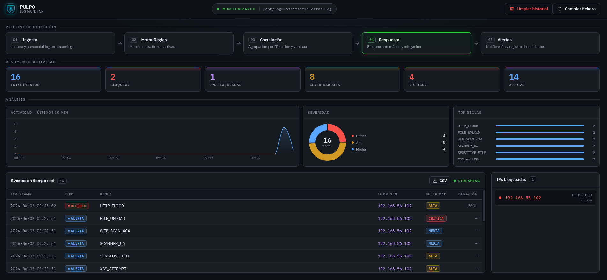

Análisis de logs en streaming
Ingesta continua de syslog, auth.log, journald y ficheros arbitrarios. Cada línea se evalúa en el momento en que se escribe.
PULPO analiza tus logs en streaming, aplica reglas de detección, correlaciona eventos por IP y sesión, y responde automáticamente — todo desde un dashboard en vivo, dentro de tu propia red.
$ curl -sSL get.pulpo.sh | bash — desplegado en < 5 min

Características
Un único binario que ingiere, detecta, correlaciona y responde. Sin clústeres que mantener ni licencias por volumen de datos.
Ingesta continua de syslog, auth.log, journald y ficheros arbitrarios. Cada línea se evalúa en el momento en que se escribe.
14 reglas listas para usar y un DSL en YAML para escribir las tuyas: regex, umbrales, ventanas temporales y severidad.
Agrupa eventos por IP, sesión y ventana temporal para distinguir un ataque real de ruido: 50 logins fallidos no son 50 alertas.
Bloqueo inmediato del origen vía iptables con expiración configurable, listas blancas y modo solo-detección (IDS).
Alertas, gráficos y estado del sistema empujados por WebSocket al navegador. Sin refrescar, sin esperar al cron.
Consulta alertas y métricas desde tus herramientas con una API documentada. Persistencia embebida en SQLite, cero dependencias.
Cómo funciona
Un pipeline lineal y auditable: cada evento puede rastrearse de extremo a extremo.
Logs en streaming desde syslog, journald y ficheros
Evaluación de cada línea contra reglas YAML
Agrupación por IP, sesión y ventana temporal
Bloqueo automático vía iptables o modo IDS
Dashboard, Slack, Telegram, email y API
Precios
Empieza gratis con el core open source y escala cuando tu red lo haga.
Estudiantes, homelab, 1 host
0€· open source
licencia MIT, para siempre
Pymes y equipos pequeños
19€/ host / mes
facturación mensual, cancela cuando quieras
SOC y grandes organizaciones
A medida
contrato anual · facturación por volumen
| Característica | Community | Pro | Enterprise |
|---|---|---|---|
| Detección y respuesta | |||
| Motor IDS/IPS en streaming | ✓ | ✓ | ✓ |
| Reglas YAML personalizadas | ✓ | ✓ | ✓ |
| Bloqueo automático (iptables) | ✓ | ✓ | ✓ |
| Correlación IP / sesión / tiempo | ✓ | ✓ | ✓ |
| Correlación avanzada multi-fuente | — | — | ✓ |
| Hosts monitorizados | 1 | por licencia | ilimitados |
| Integraciones | |||
| Threat intel (AbuseIPDB / VirusTotal) | — | ✓ | ✓ |
| Slack / Telegram / email | — | ✓ | ✓ |
| API REST autenticada | — | ✓ | ✓ |
| SIEM (Splunk / Elastic) | — | — | ✓ |
| SSO / LDAP | — | — | ✓ |
| Datos y soporte | |||
| Retención de eventos | 7 días | 90 días | a medida |
| Reportes PDF programados | — | — | ✓ |
| Soporte | comunidad | email < 24 h | SLA 24/7 |
| Despliegue on-prem asistido | — | — | ✓ |
Confianza
Si tu trabajo es proteger una red, no deberías tener que confiar a ciegas en tus herramientas.
Tus logs nunca salen de tu infraestructura. PULPO funciona aislado de internet, sin nube intermedia ni dependencias externas.
El motor de detección es open source bajo licencia MIT. Audita cada línea antes de darle acceso a tus logs.
Cero llamadas a casa. Las únicas conexiones salientes son las que tú configuras: threat intel y notificaciones.
$ netstat -tupn | grep pulpo tcp 0.0.0.0:8080 LISTEN pulpo-dashboard # solo escucha en local tcp 0.0.0.0:8443 LISTEN pulpo-api # API REST, tu red ✓ 0 conexiones salientes no configuradas
FAQ
Snort y Suricata inspeccionan paquetes de red; PULPO trabaja sobre logs del sistema, donde viven los brute-force, escaladas de privilegios y accesos anómalos. Frente a Wazuh, PULPO es un único binario sin agentes pesados ni Elastic que mantener: instalado y detectando en minutos, no en días.
Sí. Detección, correlación, respuesta y dashboard funcionan completamente offline. Solo las integraciones opcionales (threat intel, Slack, Telegram) requieren salida a internet, y siempre las configuras tú.
Linux: Debian/Ubuntu, RHEL/Rocky/Alma y Arch, en x86-64 y ARM64. Se distribuye como AppImage, paquete .deb/.rpm e imagen Docker. La respuesta automática usa iptables/nftables.
Sí, en todos los planes — incluido Community. Las reglas son ficheros YAML con patrón (regex), umbral, ventana temporal, severidad y acción. Se recargan en caliente sin reiniciar el servicio.
Un host es cualquier máquina (física, VM o contenedor persistente) cuyos logs analiza PULPO. Los contenedores efímeros del mismo nodo no cuentan aparte. La licencia se ajusta mes a mes si tu número de hosts cambia.
Sí: 14 días con todas las funciones Pro, sin tarjeta de crédito. Al terminar, puedes pasar a pago o seguir en Community sin perder tus datos ni tu configuración.
Ocho tentáculos vigilando tu red. Cero puntos ciegos.
$ curl -sSL get.pulpo.sh | bash